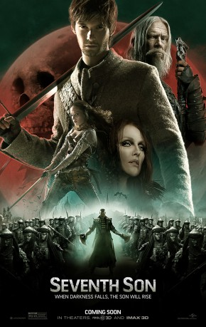

gesehen am 26.04.2017
gesehen am 26.04.2017Alternativ: Seventh Son gesehen am 26.04.2017
 
 IMDB-Wertung: 5.5 / 10
IMDB-Wertung: 5.5 / 10  Metascore:
Metascore: 
John Gregory, who is a seventh son of a seventh son and also the local spook, has protected his country from witches, boggarts, ghouls and all manner of things that go bump in the night. However John is not young anymore, and has been seeking an apprentice to carry on his trade. Most have failed to survive. The last hope is a young farmer's son named Thomas Ward. Will he survive the training to become the spook that so many others couldn't? Should he trust the girl with pointy shoes? How can Thomas stand a chance against Mother Malkin, the most dangerous witch in the county?
Jahr: 2014
Dauer: 101 Minuten
FSK: 12
Land: USA Studio: Universal PicturesTonspuren: DTS - ,
Untertitel: Deutsch,
Auflösung: 1080p (1920x800) Größe: 5724 MB
Genre: Action, Abenteuer, Fantasy
Regisseur: Sergei Bodrov
Drehbuch: Cüneyt Kaya
Soundtrack:
Darsteller:
Datei: X:\2014(N-Z)\Siebte Sohn, Der (2014, FSK12, 1920x800).mkv seit 09.04.2017
Festplatte: HD 2013(I-Z)-2014(A-Z)
 Es gibt insgesamt 163 Filme in der Gruppe '2014(N-Z)'
Es gibt insgesamt 163 Filme in der Gruppe '2014(N-Z)'